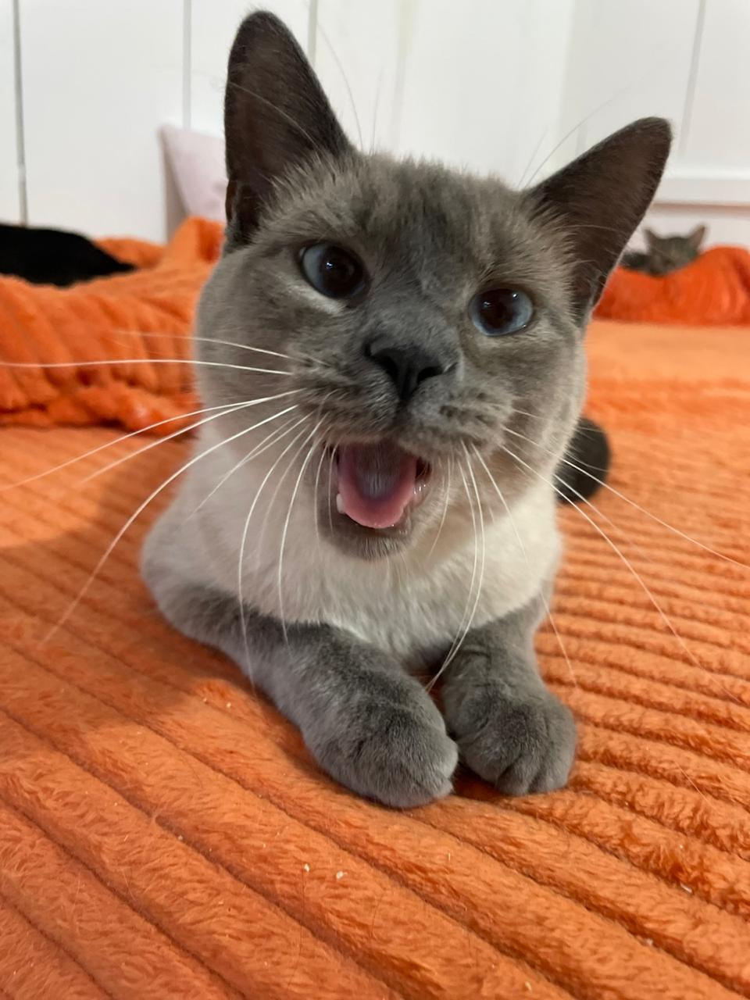
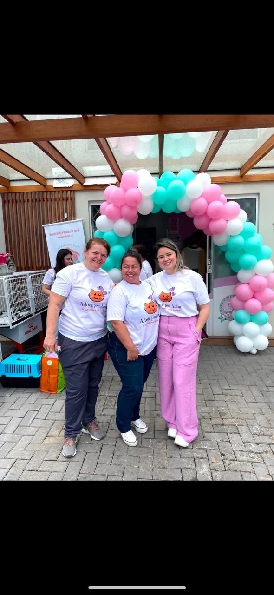
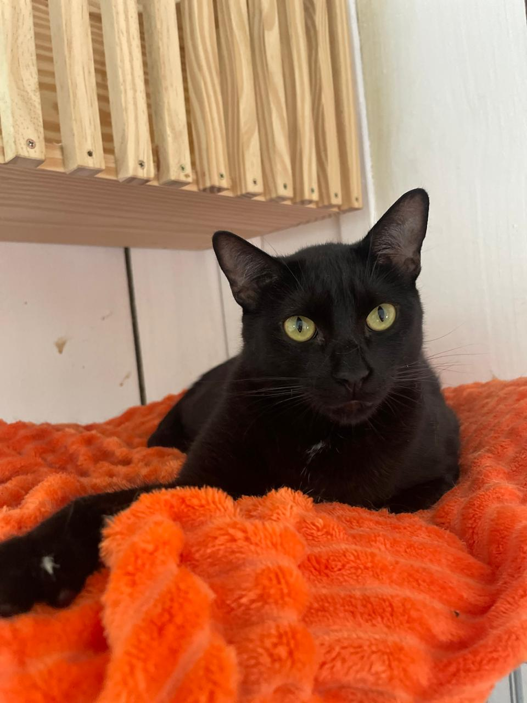
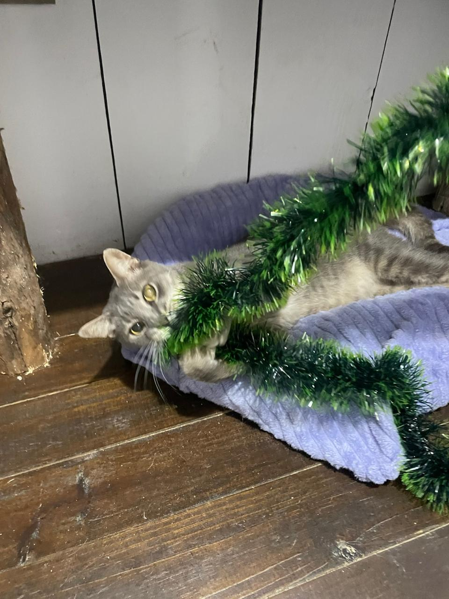
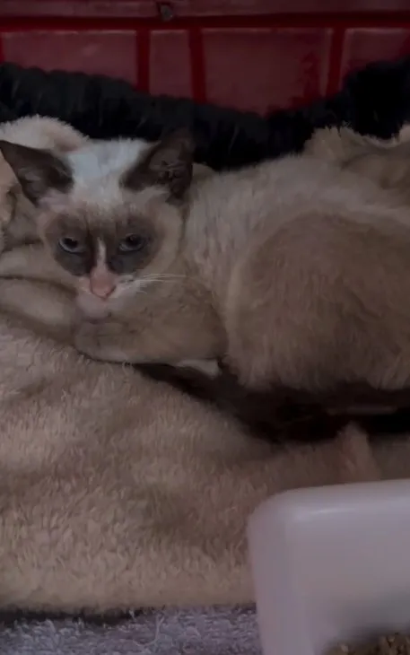
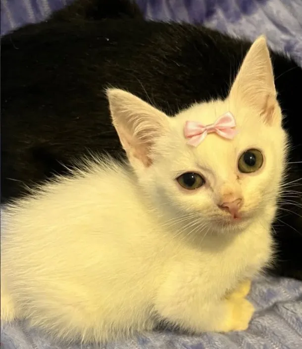
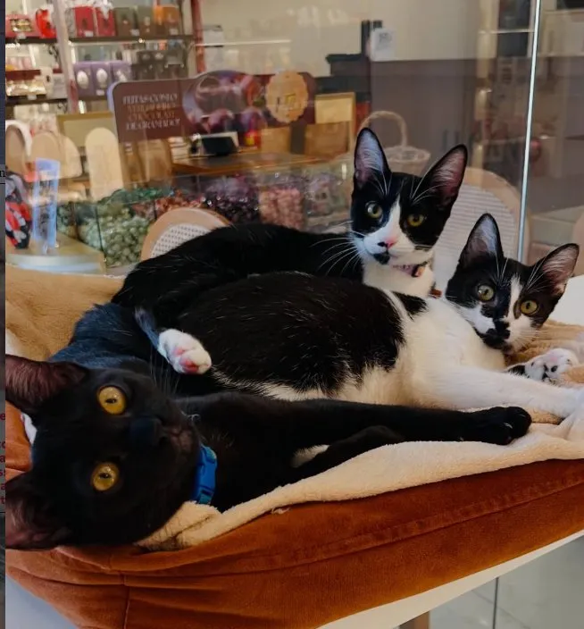
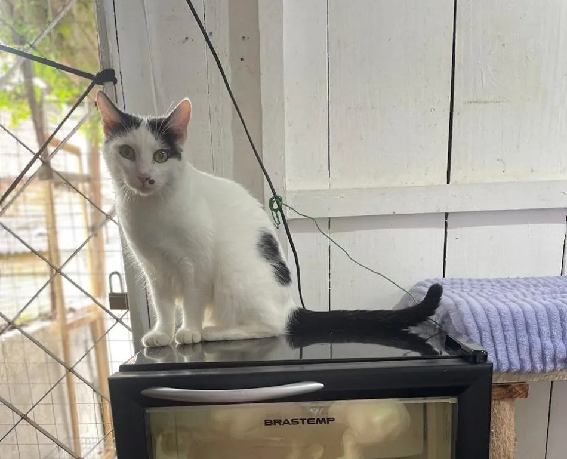

Resgatamos gatinhos vítimas de maus-tratos e abandono em Balneário Camboriú. Cada adoção é uma vida transformada. Faça parte dessa história! 💜

Existem várias formas de apoiar nossa causa
Dê um lar cheio de amor para um gatinho que precisa. Confira os disponíveis e encontre seu novo companheiro!
Ver gatinhos →Contribua financeiramente ou doe itens essenciais. Cada ajuda faz a diferença na vida desses gatinhos!
Como ajudar →Ofereça seu tempo como lar temporário ou ajude na divulgação. Seu apoio é fundamental!
Saiba mais →A Adote por Amor surgiu em abril de 2020 com uma missão clara: resgatar gatinhos vítimas de maus-tratos e abandono, oferecendo a eles cuidados, amor e a chance de encontrar uma família para sempre.
Somos completamente independentes e contamos apenas com a generosidade de pessoas como você para continuar nosso trabalho.
Conheça Nossa História →



Cada animal é tratado com carinho, respeito e dignidade
Promovemos adoção consciente e guarda responsável
Compartilhamos todas as despesas e doações recebidas
Acompanhamos cada adoção e oferecemos suporte contínuo
Recebemos denúncias de maus-tratos ou encontramos animais em situação de vulnerabilidade nas ruas. Nossa equipe vai até o local e realiza o resgate com segurança e cuidado.
Todos os gatinhos passam por avaliação veterinária, recebem vacinas, são testados para FIV/FELV, vermifugados e castrados. Casos mais graves recebem tratamento especializado.
Enquanto buscamos uma família definitiva, os gatinhos ficam em lares temporários com nossos voluntários, onde recebem amor, cuidados diários e socialização.
Realizamos entrevistas criteriosas com os interessados para garantir que o animal irá para um lar adequado. Fornecemos orientações sobre guarda responsável e mantemos contato pós-adoção.
Encontre seu novo melhor amigo e transforme uma vida! 🐾💜

3 mesesLinda gatinha branca com laço, muito carinhosa e brincalhona. Adora colo!

VariadasTrês gatinhos inseparáveis, muito tranquilos e sociáveis. Ideais para apartamento!

1 anoGatinha branca e preta, muito curiosa e ativa. Adora explorar o ambiente!
Mais gatinhos disponíveis no nosso Instagram!
📸 Ver Todos no InstagramNavegue pelas fotos e descrições dos gatinhos disponíveis em nosso Instagram ou nesta página. Veja qual combina mais com você e sua família!
Envie uma mensagem pela Direct do Instagram ou e-mail demonstrando interesse. Informe qual gatinho você gostaria de conhecer.
Faremos algumas perguntas sobre sua rotina, moradia, experiência com pets e expectativas. É para garantir que o match seja perfeito para ambos!
Agende uma visita para conhecer o gatinho pessoalmente. Veja se há conexão e tire todas as suas dúvidas com nossos voluntários.
Tudo certo? Você assina um termo de adoção responsável, recebe orientações de cuidados e leva seu novo amigo para casa! Mantemos contato para acompanhar a adaptação. 🐾💜
Somos 100% independentes e dependemos da sua generosidade para continuar salvando vidas.
Sua contribuição ajuda a pagar veterinário, ração, medicamentos e todos os cuidados necessários.
💡 Você pode doar qualquer valor, único ou recorrente.
Banco: Santander · Titular: Bianca
📸 Envie o comprovante para nosso Instagram ou e-mail.
Aceitamos diversos itens essenciais para o cuidado dos gatinhos:
📍 Como doar itens: Entre em contato pelo Instagram ou e-mail para combinar a entrega.
Seja adotando, doando ou voluntariando, sua ajuda transforma vidas.
Juntos podemos dar uma vida melhor para esses gatinhos! 🐾💜